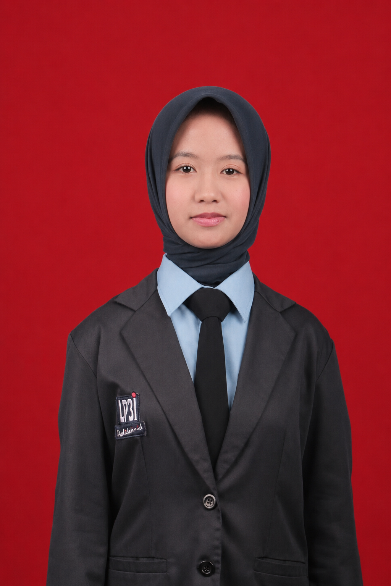

2025 — SEKARANG
Politeknik LP3I Pekanbaru
Komputerisasi Akuntansi · D2
Mempelajari prinsip dan praktik akuntansi, akuntansi biaya, Excel, perpajakan, sistem informasi akuntansi, serta pengelolaan data keuangan.
Mahasiswi Komputerisasi Akuntansi yang menyukai pekerjaan terstruktur—dari mengolah data keuangan hingga memastikan administrasi berjalan rapi dan terkoordinasi.

Saya menggabungkan dasar akuntansi dengan pengalaman organisasi: terbiasa mengurus dokumen, menyusun laporan, dan membantu tim tetap berjalan terarah.
Saat ini saya menempuh studi Komputerisasi Akuntansi di Politeknik LP3I Pekanbaru. Saya tertarik pada akuntansi, pengolahan data, perpajakan, dan administrasi organisasi.
Pengalaman sebagai sekretaris BEM mengasah kebiasaan saya dalam menata dokumen, mencatat hasil rapat, mengatur jadwal, dan menjaga komunikasi antaranggota. Saya bekerja dengan teliti, disiplin, dan terbuka untuk terus belajar.
Fondasi akademik saya menghubungkan ketelitian akuntansi, keterampilan komputer, dan pemahaman dasar bisnis.
Komputerisasi Akuntansi · D2
Mempelajari prinsip dan praktik akuntansi, akuntansi biaya, Excel, perpajakan, sistem informasi akuntansi, serta pengelolaan data keuangan.
Jurusan IPA · Kurikulum K13
Mengembangkan dasar akademik dan aktif dalam kegiatan organisasi sekolah, termasuk bidang prestasi akademik, seni, dan olahraga.
Tanggung jawab organisasi menjadi ruang latihan untuk komunikasi, dokumentasi, koordinasi, dan konsistensi menyelesaikan tugas.
Politeknik LP3I Pekanbaru
SMA Negeri 1 Kampar Kiri Hilir
Kegiatan kepramukaan
Kombinasi keterampilan teknis dan cara kerja yang mendukung peran di bidang accounting, administrasi, dan perpajakan.
Dasar pengolahan informasi dan administrasi keuangan.
Pemahaman dasar perpajakan dari pembelajaran akuntansi.
Terbiasa berkoordinasi, mengatur waktu, dan menuntaskan tugas.
Saya terbuka untuk kesempatan magang maupun full-time di bidang administrasi, accounting, dan perpajakan.